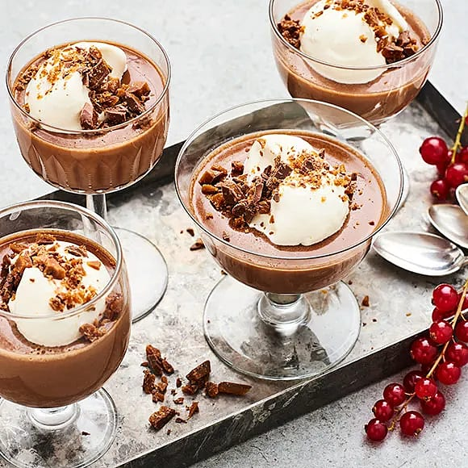

Daimpannacotta

Perfekt desert för både fest och vardag
Original Recept
Ingredienser:
- 2 Gelatinblad
- 1 Vaniljstång
- 5dl Vispgrädde
- 200g Mjölkchoklad med daim
Topping:
Till servering:
- Lägg gelatinbladen i kallt vatten ca 5min innan användning
- Skär ett snitt i vaniljstången och skrapa ur fröna.
- Koka upp grädden tillsammans med frön och vaniljstång och låt sjuda några minuter.
- Ta upp vaniljstången. Bryt ned chokladen i grädden, rör tills chokladen smällt.
- Ta upp gelatinbladen ur vattnet och rör ner dem i grädden och låt smälta till en slät smet och att allt blandats ordentligt.
- Häll upp i glas eller små burkar. Låt stelna i kylskåp minst 4 timmar.
- Hacka daimen och strö den över pannacottorna vid servering.
Pannacottan är fri från gluten och ägg. Innehåller laktos och mjölkprotein.